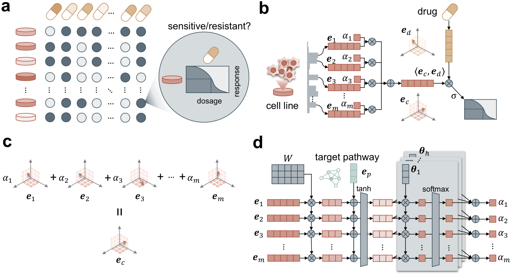

Publications
Note: * indicates equal contribution, † indicates co-corresponding author.
Joint Clustering of Single Cell Sequencing and Fluorescence in situ Hybridization Data for Reconstructing Clonal Heterogeneity in Cancers
Journal of Computational Biology 28(11):1-17. 2021.
Assessing the Contribution of Tumor Mutational Phenotypes to Cancer Progression Risk
PLOS Computational Biology 17(3):e1008777. 2021. Impact Factor=4.4
Neural Network Deconvolution Method for Resolving Pathway-Level Progression of Tumor Clonal Expression Programs with Application to Breast Cancer Brain Metastases
Frontiers in Physiology 11:1055. 2020. Impact Factor=4.1


Phylogenies Derived from Matched Transcriptome Reveal the Evolution of Cell Populations and Temporal Order of Perturbed Pathways in Breast Cancer Brain Metastases
Proceedings of the International Symposium on Mathematical and Computational Oncology 3-28 (ISMCO). 2019. Oral